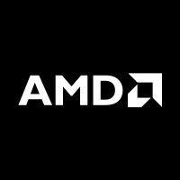
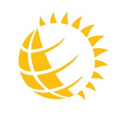
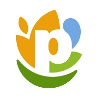
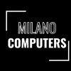

AI/ML/HPC Software Program Manager at AMD · AIG NPI
Driving software program execution for AI, machine learning, and high-performance computing new product introduction.
Vincenzo Milano / Toronto · AI / ML / HPC
AI/ML/HPC Software Program Manager on AMD's AIG NPI team, working across technical execution, performance, data, and strategy.
 Technical systems
Technical systems
01 / 04
Selected work and experience
I have loved technology for as long as I can remember. I started by taking apart broken devices at home, moved on to building computers at 13, and now work where technical systems meet business decisions.
My work spans AI/ML/HPC program management, enterprise analytics, hardware performance, automation, and community leadership. I like translating complex work into clear priorities, measurable outcomes, and momentum.
Education · 2022 — 2027 · Honours
Honours Bachelor of Science in Computer Science + Honours Bachelor of Business Administration
Activities and societies: Laurier Computing Society (LCS), HawkHacks, National Case Competition (NCC), Lazaridis Students' Society (LazSoc), Lazaridis Council

Driving software program execution for AI, machine learning, and high-performance computing new product introduction.

Cut Power BI dashboard refresh times from 6 hours to 3 minutes and reduced model sizes from 320MB to 67MB.

Built analytics and automation tools that improved operational visibility and identified $680K+ in annual logistics savings.

Assembled, upgraded, and repaired 50+ custom PCs while turning benchmark and thermal data into clear client recommendations.
As President of the Laurier Computing Society, I direct a 52-member executive team across 7 departments serving 4,000+ students. We deliver 26+ annual events, technical workshops, and industry panels that connect students with opportunity. I have also helped with hackathons and case competitions through LCS, HawkHacks, the National Case Competition, Lazaridis Students' Society, Lazaridis Council, and JDC Central. As a former IBM Student Ambassador, I also helped bring industry perspective to campus programming. Previously, as Founder and Chief Strategy Officer of Konfer Inc., I built startup partnerships and organized SpurHacks, a 1,400+ participant hackathon with $100,000+ in prizes.
( 05 / Let’s connect )